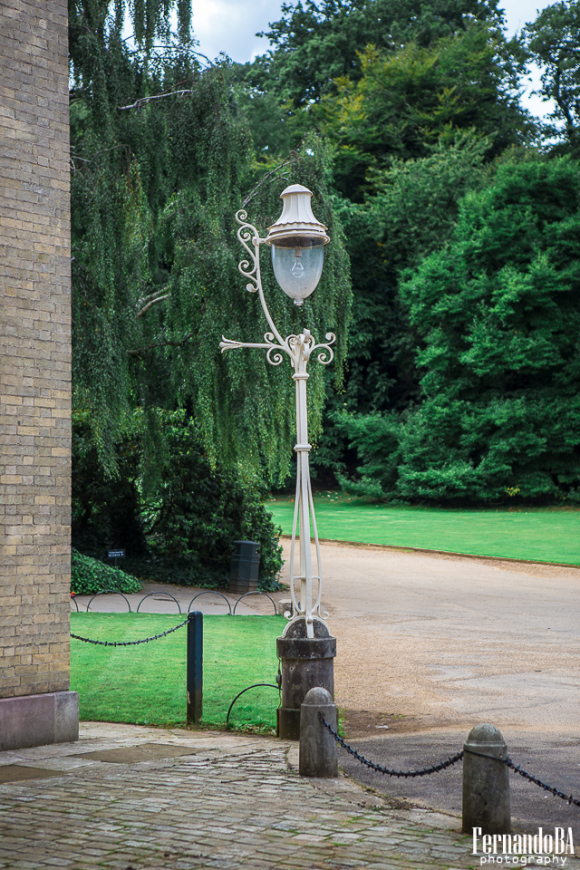
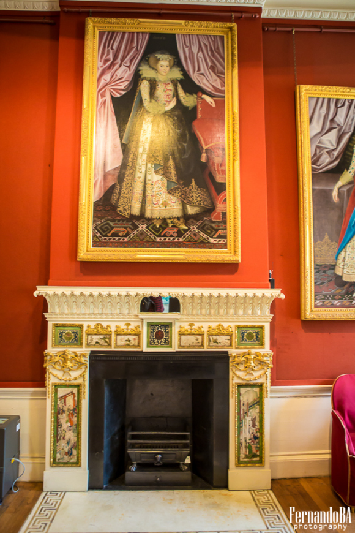
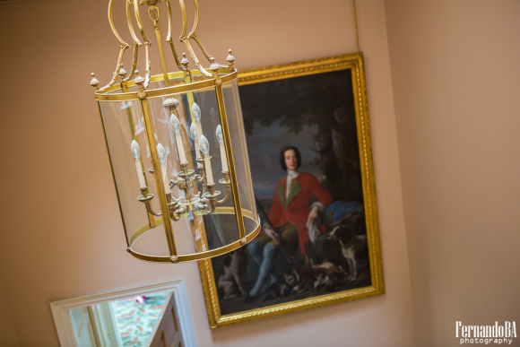

Kenwood House
Kenwood House and Gardens is located in the heart of Hampstead Heath, one of London’s most precious gems, and part of English Heritage.
Its majestic interior was remodelled by the famous Scottish architect Robert Adam in the mid XVI century, and a new room was added to the house as well – the library. This is just one of the reasons to visit Kenwood House.
Surrounded by gardens that are nurtured to show its beauty and charm all year long, it doesn’t matter what time of year you visit this property, there will always be something to be seen.
In 1999 the movie Notting Hill was released and a few scenes where shot in Kenwood Gardens (remember that scene where Hugh Grant’s character visits Julia Robert’s character at the film set).
For the art lovers, there is not only the exquisite architecture, but you can find Rembrandt to Turner hanging within its walls.
 A place that is worth seeing for its beauty, for a rendezvous in one of the most charming London neighbourhoods. There is also a space reserved for kids (in case you are wondering if this is an adult activity).
The pictures shown in this post where made by the photographer Fernando BA - a Brazilian who lives in London for over 4 years, and works not only with landscape photography, but with people as well. To see more of his work, access his website and delight yourself with the images.
The entrance to Kenwood House is free. For more information read here.